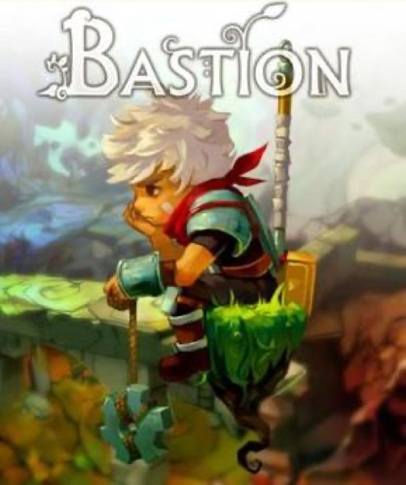

RPG · 2011
Bastion
A narrator who describes what you just did, and judges it a little.

Cover: Wikipedia: Bastion (video game)
Facts
- Released
- 2011-07-20
- Genre
- Action RPG
- Category
- RPG
- Platforms
- Mobile, Nintendo, PC, PlayStation, Xbox
- Developers
- Supergiant Games
- Publishers
- Warner Bros. Games
PC requirements
- Minimum
- [object Object]